Tổng Quan: Thiên Đường Sinh Thái Nghỉ Dưỡng Măng Đen
Nằm nép mình giữa đại ngàn Kon Tum ở độ cao trung bình 1.200m so với mực nước biển, Măng Đen (thị trấn thuộc huyện Kon Plông) được mệnh danh là "Đà Lạt thứ hai của Tây Nguyên" hay "Nàng thơ của xứ sở sương mù". Nơi đây sở hữu khí hậu ôn đới quanh năm mát lành với nhiệt độ trung bình từ 16 - 22°C, độ che phủ rừng tự nhiên lên tới hơn 80% cùng quần thể danh thắng kỳ vĩ được dân gian truyền tụng là xứ sở của "Bảy hồ ba thác".
Khác với sự sôi động náo nhiệt của những đô thị du lịch hiện đại, Măng Đen chinh phục trái tim lữ khách bằng vẻ đẹp nguyên sơ, bình yên đến thuần khiết: những đồi thông reo vi vút trong sương sớm, dòng thác Pa Sỹ buông mình trắng xóa giữa rừng già, mặt hồ Đăk Ke phẳng lặng như gương soi và tiếng cồng chiêng trầm hùng vang vọng từ những mái Nhà Rông của đồng bào Mơ Nâm. Đây là chốn dừng chân chữa lành lý tưởng để gác lại những âu lo thường nhật.
🌿 Điểm Nhấn Sinh Thái Măng Đen
Khí hậu cao nguyên quanh năm mát lạnh, không khí trong lành với nồng độ ion âm cao, cảnh quan thiên nhiên còn giữ vẹn nguyên nét hoang sơ mộc mạc cùng hệ thống homestay gỗ mộc nép mình dưới tán thông già đầy thi vị.
Vị Trí Địa Lý & Dấu Ấn Lịch Sử Vùng Đất Plông Kơ Xâm
Về địa lý, Măng Đen nằm trên sườn Đông dãy Trường Sơn Bắc Tây Nguyên, cách thành phố Kon Tum 50km về phía Đông Bắc theo tuyến Quốc lộ 24 huyết mạch kết nối sang tỉnh Quảng Ngãi và vùng duyên hải miền Trung. Tên gọi "Măng Đen" bắt nguồn từ cụm từ tiếng Mơ Nâm "T’măng Deeng", có nghĩa là vùng đất bằng phẳng và trù phú.
Từ đầu thế kỷ 20, người Pháp đã khảo sát cao nguyên Măng Đen và nhận thấy nơi đây có điều kiện tự nhiên, thổ nhưỡng và khí hậu vô cùng tương đồng với Đà Lạt, từ đó quy hoạch mở đường, trồng thông ba lá và lập đồn điền chăn nuôi xứ lạnh. Trải qua những năm tháng kháng chiến giữ nước kiên cường của quân dân Kon Plông, Măng Đen ngày nay đang vươn mình mạnh mẽ trở thành trung tâm du lịch sinh thái rừng tầm cỡ quốc gia theo định hướng của Chính phủ.
• Quyết định số 1492/QĐ-TTg ngày 20/09/2013 của Thủ tướng Chính phủ: Phê duyệt Đề án quy hoạch xây dựng vùng du lịch sinh thái Măng Đen và quy hoạch chung đô thị Kon Plông đến năm 2030.
• Quyết định số 91/QĐ-TTg ngày 18/01/2023 của Thủ tướng Chính phủ: Phê duyệt Nhiệm vụ Quy hoạch chung xây dựng Khu du lịch Măng Đen đến năm 2045 thành Khu du lịch quốc gia trọng điểm.
• Quyết định số 1756/QĐ-TTg ngày 31/12/2023 của Thủ tướng Chính phủ: Phê duyệt Quy hoạch tỉnh Kon Tum thời kỳ 2021 - 2030, tầm nhìn 2050 xác định Măng Đen là cực tăng trưởng du lịch sinh thái nghỉ dưỡng của vùng Tây Nguyên.
• Di sản Không gian Văn hóa Cồng chiêng Tây Nguyên: Được UNESCO ghi danh là Kiệt tác di sản truyền khẩu và phi vật thể của nhân loại năm 2005.
• Cổng TTĐT tỉnh Kon Tum:
kontum.gov.vn • Cổng TTĐT huyện Kon Plông: konplong.kontum.gov.vn.
Huyền Thoại & Truyền Tích Dân Gian Xứ Sở Bảy Hồ Ba Thác
Gắn liền với tâm thức của người Mơ Nâm, Măng Đen là vùng đất thiêng liêng lưu giữ thiên tình sử bi tráng và những huyền tích dân gian huyền ảo:
- Huyền tích Bảy Hồ Ba Thác: Truyền thuyết kể rằng thuở xa xưa, thần Yang tạo ra cao nguyên Plông Kơ Xâm tươi đẹp và phái 7 người con trai xuống trần gian khai hoang lập nghiệp. Thần dặn các chàng trai chỉ được ăn hoa quả rừng, cá suối và không được ăn thịt thú rừng có mầm sống. Tuy nhiên, trong một mùa đông khắc nghiệt đói khát, các người con đã phạm lời thề ăn thịt thú cấm. Thần Yang nổi giận giáng sấm sét trừng phạt, đốt cháy 7 ngôi làng thành 7 miệng hố sâu, nước mưa dâng đầy hóa thành 7 hồ nước thiêng (Đăk Ke, Đam Bri, Toong Rơ Pông, Toong Zơ Ri, Toong Săng, Toong Pô, Toong Đam); và từ trên đỉnh núi cao, dòng nước mắt hối hận của các chàng trai hóa thành 3 ngọn thác kỳ vĩ: Pa Sỹ, Đăk Ke và Lô Ba.
- Truyền tích Tượng Đức Mẹ Măng Đen (Đức Mẹ Cụt Tay): Được phục dựng giữa cánh rừng nguyên sinh từ năm 1971, bức tượng trải qua chiến tranh bom đạn khốc liệt bị gãy mất đôi bàn tay và khuôn mặt mang dáng dấp người phụ nữ Tây Nguyên khắc khổ. Bức tượng trở thành biểu tượng tâm linh kỳ bí, thu hút hàng triệu đồng bào lương - giáo khắp mọi miền đất nước hành hương cầu nguyện an lành, chở che.
Chuỗi Hình Ảnh 4 Mùa Du Lịch Măng Đen Tuyệt Mỹ
Với khí hậu cao nguyên ôn hòa quanh năm, mỗi mùa tại Măng Đen lại dệt nên một bức tranh thiên nhiên quyến rũ rung động lòng người. Dưới đây là bộ ảnh 4 mùa độc bản tái hiện vẻ đẹp tinh khôi nơi đại ngàn:
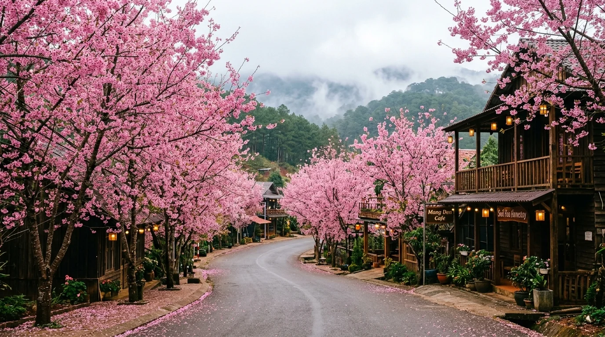
Tháng 1 - Tháng 3 • Mùa XuânMùa Xuân: Sắc Hồng Mai Anh Đào & Tiếng Cồng Chiêng Mừng Lúa Mới
Tiết trời se lạnh 16-19°C đón hàng vạn cây mai anh đào nở rộ thắm hồng khắp thị trấn, đồng bào Mơ Nâm rộn ràng mở hội mừng lúa mới bên ché rượu cần thơm ngát.
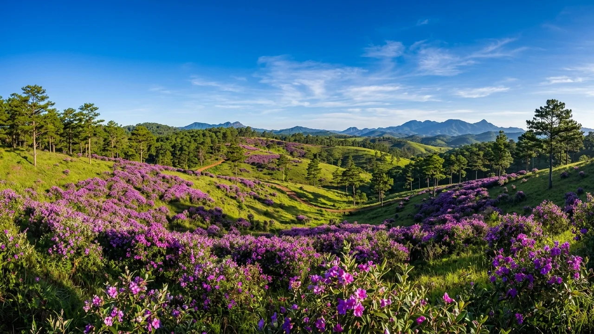
Tháng 4 - Tháng 7 • Mùa HạMùa Hạ: Đồi Hoa Sim Tím & Thiên Đường Trốn Nóng Lý Tưởng
Khi đồng bằng oi ả thì Măng Đen mát lành 20-22°C. Các triền đồi ngập tràn hoa sim tím thơ mộng, mùa thu hoạch dâu tây chín mọng tại các trang trại hữu cơ.
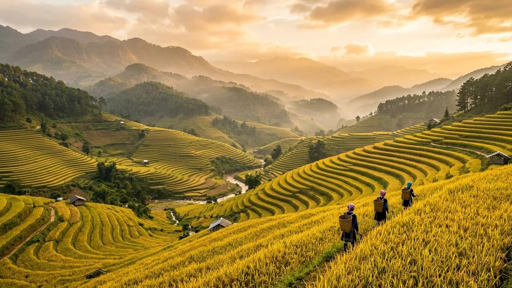
Tháng 8 - Tháng 10 • Mùa ThuMùa Thu: Ruộng Bậc Thang Sóng Vàng & Hương Cà Phê Xứ Lạnh
Thung lũng Kon Tu Rằng khoác lên chiếc áo vàng rực rỡ của mùa gặt. Những rẫy cà phê Arabica chín đỏ trĩu cành tỏa hương thơm nồng nàn trong nắng thu dịu ngọt.
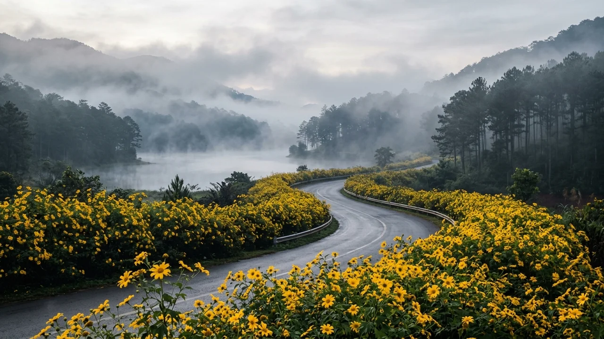
Tháng 11 - Tháng 12 • Mùa ĐôngMùa Đông: Hoa Dã Quỳ Vàng Rực & Huyền Ảo Biển Sương Mù
Cái lạnh 12-16°C làm sương mù giăng kín mặt hồ huyền ảo. Dọc Quốc lộ 24 bừng sáng sắc vàng dã quỳ, đêm về quây quần bên bếp than hồng thưởng thức gà nướng thơm lừng.
Top 10 Thắng Cảnh Biểu Tượng Nhất Định Phải Đến
Măng Đen lưu giữ vẻ đẹp hoang sơ kỳ vĩ với hệ thống thác nước nguyên sinh, mặt hồ thơ mộng và các công trình tâm linh trang nghiêm giữa rừng thông:
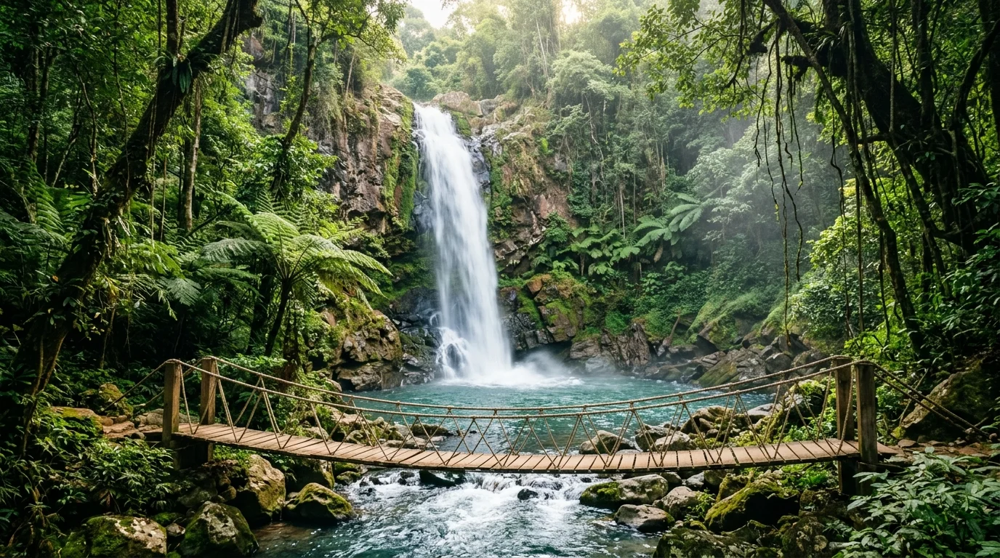
1. Khu Du Lịch Sinh Thái Thác Pa Sỹ — Hùng Quan Rừng Già Giữa Thung Lũng Rêu Phong
Ngọn thác đẹp và nổi tiếng nhất Măng Đen nằm ở độ cao 1.500m, hình thành từ 3 con suối lớn hội tụ. Dòng thác đổ trắng xóa như dải lụa mềm vắt qua thảm thực vật rêu phong, xung quanh là khu vườn tượng gỗ dân gian Tây Nguyên mộc mạc.
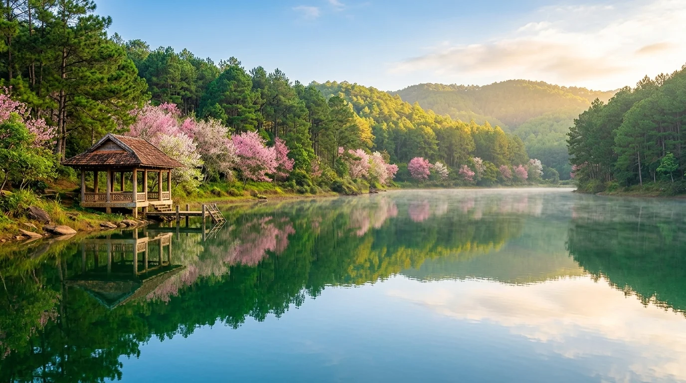
2. Hồ Đăk Ke (Hồ Toong Rơ Pông)
Nằm trong cụm huyền tích "Bảy hồ", hồ Đăk Ke thơ mộng phẳng lặng như gương soi bóng rặng thông cổ thụ và hoa mai anh đào hồng thắm mùa xuân.
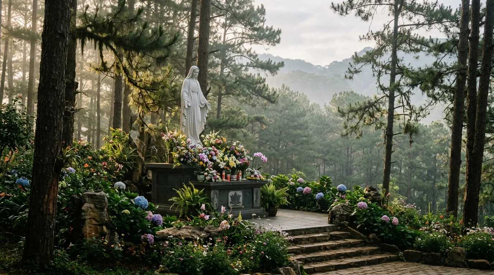
3. Tượng Đức Mẹ Măng Đen Linh Thiêng
Điểm hành hương nổi tiếng cả nước tọa lạc giữa tán rừng nguyên sinh tĩnh mịch, mang lại cảm giác bình an, chở che và nhiều câu chuyện nhiệm mầu.
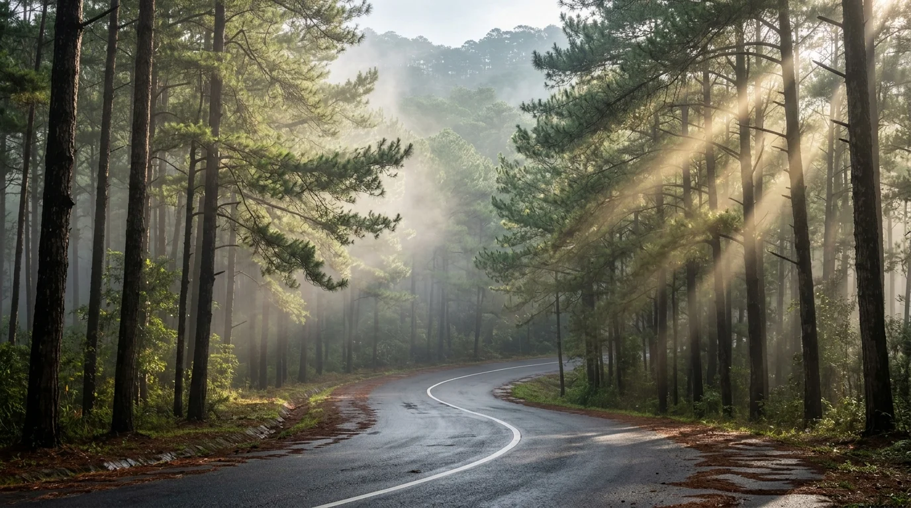
4. Rừng Thông Đại Ngàn Măng Đen & Đồi Cỏ Hoa Sim Tím
Rừng thông bạt ngàn hàng chục năm tuổi với thân cây thẳng tắp vươn lên nền trời xanh ngắt. Con đường xuyên rừng thông buổi sớm giăng mắc sương mù như đưa lữ khách lạc bước vào miền cổ tích Bắc Âu, ngập tràn sắc hoa sim tím biếc mùa hè.
5. Cung Đèo Măng Đen (Quốc Lộ 24)
Cung đèo dài 12km uốn lượn vượt non cao đưa du khách lên bình nguyên 1.200m, một bên là vách đá rợp bóng thông, một bên là vực sâu mây cuộn ngoạn mục.
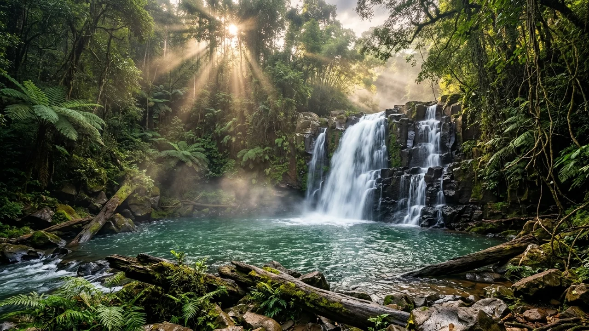
6. Thác Lô Ba (Tuyệt Tác Hoang Dã)
Ẩn mình sâu trong cánh rừng nguyên sinh rậm rạp, thác Lô Ba giữ trọn vẻ đẹp hoang sơ chưa bị thương mại hóa, dòng nước lạnh đổ qua ghềnh đá bazan tung bọt trắng xóa.
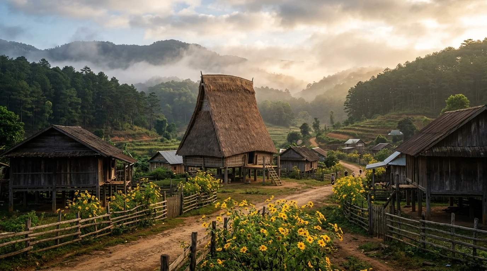
7. Làng Du Lịch Cộng Đồng Kon Pring — Mái Nhà Rông Sừng Sững Giữa Thung Lũng Mây Ngàn
Ngôi làng cổ nguyên sơ của đồng bào Mơ Nâm nép mình giữa thung lũng thông reo, nổi bật với kiến trúc Nhà Rông khổng lồ bằng gỗ tự nhiên, những nếp nhà sàn cổ tích và vườn hoa dã quỳ vàng rực.
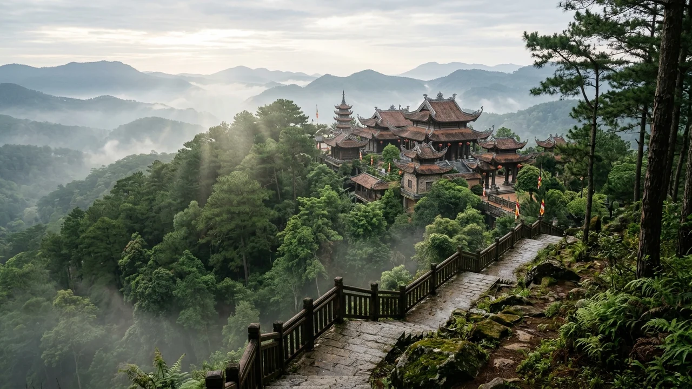
8. Chùa Khánh Lâm (Cõi Thiền Rừng Già)
Tọa lạc uy nghiêm trên ngọn đồi nguyên sinh rộng 10ha ở độ cao 1.200m, vượt hơn 200 bậc đá rợp bóng cây để chiêm bái chánh điện tráng lệ và ngắm toàn cảnh thung lũng.
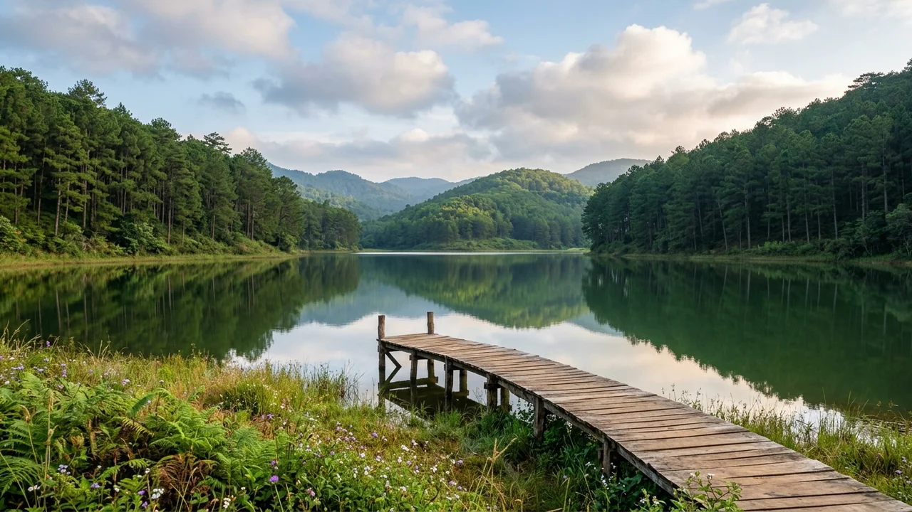
9. Hồ Đam Bri & Quần Thể Bảy Hồ
Hồ nước tự nhiên rộng lớn bậc nhất trong cụm di tích Bảy hồ, được bao quanh bởi rặng thông già thẳng tắp, địa điểm lý tưởng để chèo SUP và câu cá thư thái.
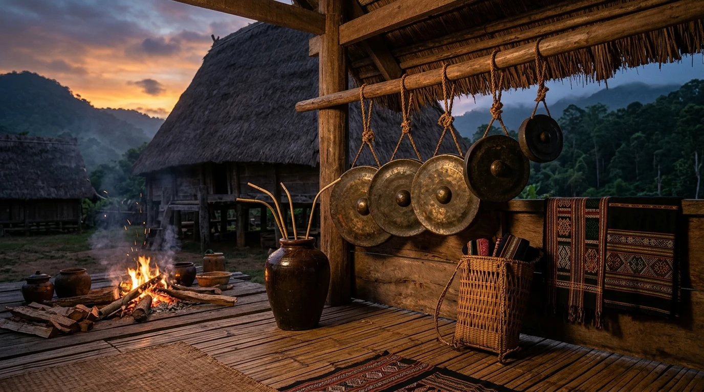
10. Không Gian Văn Hóa Cồng Chiêng Tây Nguyên — Kiệt Tác Di Sản Phi Vật Thể Nhân Loại
Di sản văn hóa phi vật thể đại diện của nhân loại được UNESCO vinh danh. Tiếng cồng chiêng ngân vang bên hiên nhà rông cổ, ché rượu cần vít cong và ngọn lửa bập bùng thắp sáng sử thi đại ngàn Trường Sơn.
Cẩm Nang Di Chuyển & Cung Đường Giao Thông
Măng Đen tuy nằm giữa núi rừng nhưng hạ tầng giao thông kết nối ngày càng thuận lợi:
- Đường hàng không: Sân bay gần nhất là Sân bay Pleiku (Gia Lai - PXU) cách Măng Đen khoảng 100km (thời gian đi ô tô khoảng 2h - 2h30). Các chuyến bay thẳng từ Hà Nội và TP.HCM hạ cánh Pleiku hàng ngày. Từ sân bay, du khách có thể bắt taxi, thuê xe tự lái hoặc đi xe buýt sang TP Kon Tum rồi bắt xe buýt số 06 lên Măng Đen.
- Xe khách giường nằm chất lượng cao: Có các chuyến xe giường nằm cao cấp chạy thẳng từ TP.HCM, Đà Nẵng, Quy Nhơn đến tận trung tâm thị trấn Măng Đen (nhà xe Phượng Thu, Tân Anh, Việt Tân Phát) với giá vé từ 300.000 - 450.000 VNĐ.
- Tuyến xe buýt nội tỉnh: Tuyến xe buýt số 06 (TP Kon Tum - TT Măng Đen) hoạt động từ 5h30 đến 17h00 hàng ngày, tần suất 30-45 phút/chuyến với giá vé chỉ 35.000 VNĐ/lượt.
- Thuê xe máy tại Măng Đen: Rất thuận tiện tại các homestay/khách sạn, giá từ 120.000 - 150.000 VNĐ/ngày. Đường sá Măng Đen vắng vẻ, không khí mát mẻ rất thích hợp đi xe máy ngắm cảnh.
💡 Kinh Nghiệm Di Chuyển An Toàn
Đoạn đèo Măng Đen trên Quốc lộ 24 có nhiều khúc cua tay áo và hay có sương mù dày đặc vào sáng sớm hoặc chiều tối. Nếu tự lái xe máy hoặc ô tô, hãy bật đèn sương mù, giữ khoảng cách an toàn và về số thấp khi xuống dốc.
Tinh Hoa Ẩm Thực Măng Đen — Hương Vị Đại Ngàn Tây Nguyên
Ẩm thực Măng Đen là sự kết hợp độc đáo giữa gia vị hoang dã của núi rừng (mắc khén, hạt dổi, tiêu rừng) và các sản vật nuôi trồng ở vùng xứ lạnh:
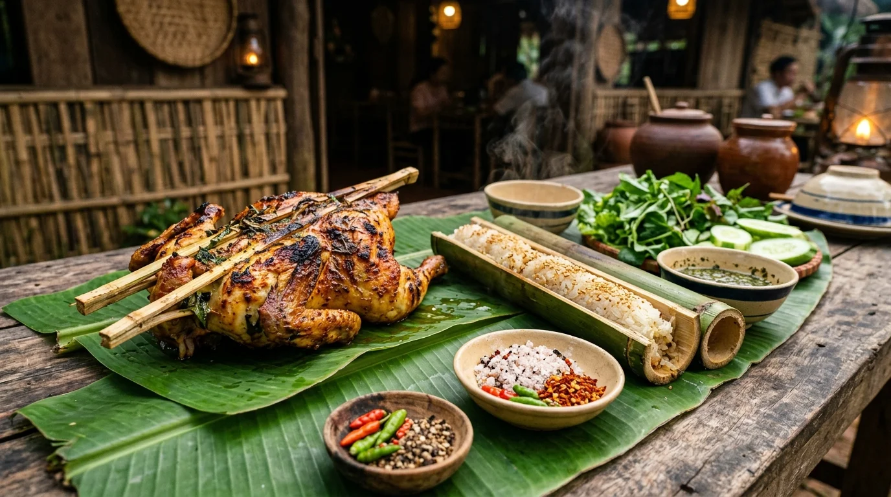
1. Gà Nướng Cơm Lam Ống Nứa
Món ăn biểu tượng của đại ngàn. Gà thả đồi thịt săn chắc được tẩm ướp lá tiêu rừng, sả và mật ong nướng than củi vàng ruộm; ăn kèm ống cơm nếp nương nướng dẻo quánh chấm muối é ớt rừng cay xé lưỡi.
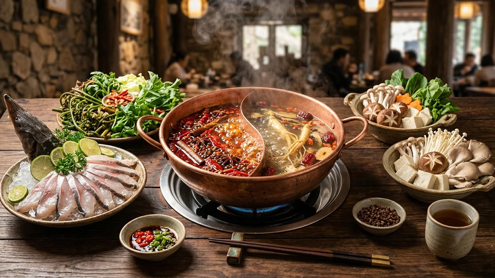
2. Lẩu Xuyên Tiêu Măng Đen (Cay Nồng Ấm Áp)
Nồi lẩu hai ngăn trứ danh: ngăn cay đậm đà hạt xuyên tiêu rừng kết hợp táo đỏ, kỷ tử thảo mộc; ngăn thanh ngọt từ nước hầm xương củ quả. Nhúng kèm cá tầm tươi sống, thịt bò và đĩa rau xanh xứ lạnh bạt ngàn.
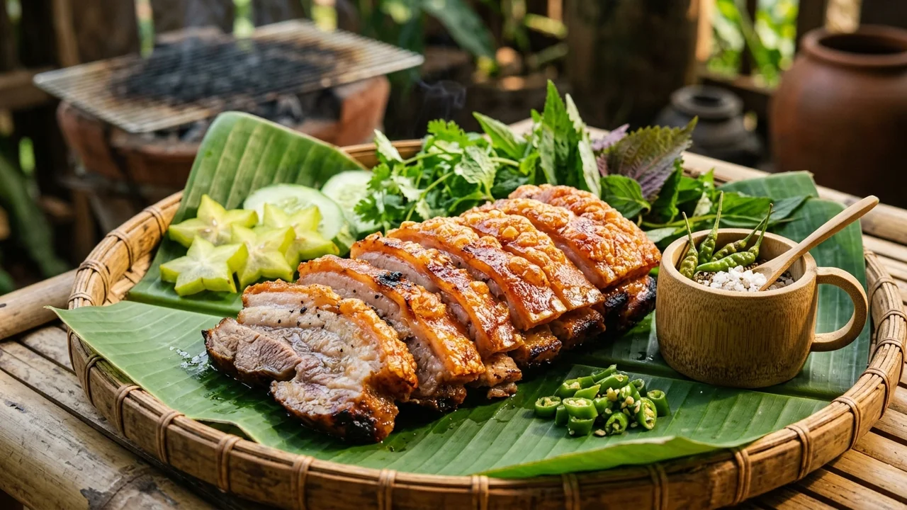
3. Heo Broong (Heo Rẫy) Nướng Da Giòn
Giống heo bản địa của người Ba Na nuôi thả tự nhiên trên rẫy, trọng lượng chỉ 10-15kg. Thịt heo ít mỡ, da mỏng được quay nguyên con bằng than củi vàng giòn rụm, chấm muối ớt hột giã nhuyễn thơm nức mũi.
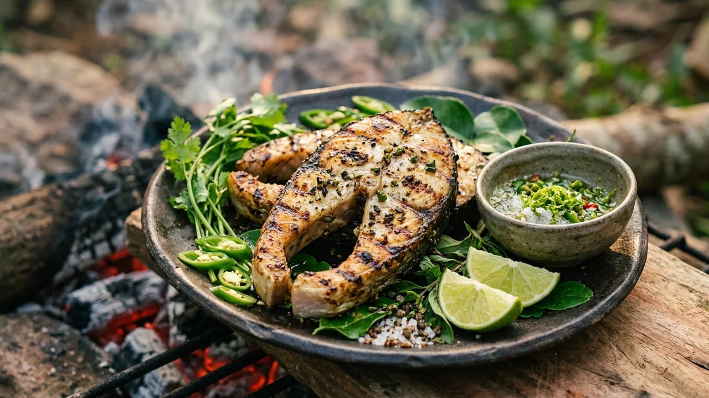
4. Cá Tầm Nước Lạnh Nướng & Lẩu Măng Chua
Nhờ nguồn nước suối lạnh tinh khiết dưới chân núi, cá tầm Măng Đen thịt trắng phau, dai ngọt và béo ngậy. Món cá tầm nướng muối ớt rừng hay nấu lẩu măng chua rừng luôn là lựa chọn hàng đầu cho bữa tiệc cao nguyên.
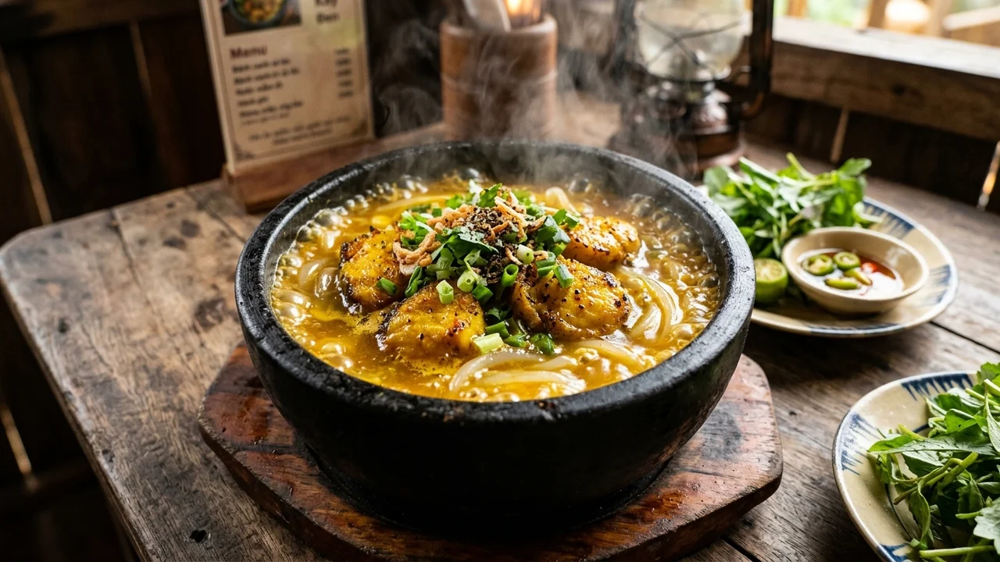
5. Bánh Canh Cá Lóc Thố Đá A Kay
Món ăn sáng trứ danh trong tiết trời se lạnh Măng Đen. Bánh canh đựng trong thố đá đun sôi sùng sục giữ nhiệt cực lâu; sợi bánh gạo tự làm dẻo thơm, cá lóc đồng om nghệ cay ấm ăn kèm rổ rau đắng tươi non.
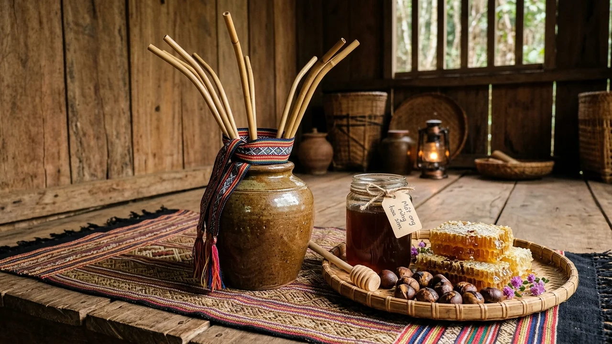
6. Rượu Cần Mơ Nâm & Mật Ong Rừng Hoa Sim
Đặc sản trân quý của đồng bào. Rượu cần ủ từ gạo nếp nương và men vỏ cây rừng ngọt thơm say đắm lòng người; kết hợp cùng mật ong ruồi hoa sim rừng nguyên chất màu hổ phách làm món quà biếu ý nghĩa.
Bảng Giá Vé Tham Quan & Dịch Vụ Niêm Yết
Giá vé tham quan và dịch vụ du lịch tại Măng Đen rất hợp lý, minh bạch và thân thiện với du khách:
| Điểm Tham Quan / Dịch Vụ | Mức Giá Vé Niêm Yết | Quy Định & Quyền Lợi Đi Kèm |
|---|---|---|
| Khu du lịch sinh thái Thác Pa Sỹ | 20.000 VNĐ/người lớn 10.000 VNĐ/trẻ em |
Tham quan thác nước, vườn tượng gỗ dân gian Tây Nguyên, cầu treo. |
| Khu du lịch Hồ Đăk Ke | MIỄN PHÍ VÉ VÀO | Dạo bộ ngắm cảnh miễn phí. Thuê thuyền đạp vịt: 50.000 VNĐ/30 phút. |
| Đồi Đức Mẹ Măng Đen | MIỄN PHÍ VÀO CỬA | Điểm tâm linh hành hương tự do, có bãi đỗ xe ô tô và nhà vệ sinh sạch sẽ. |
| Chùa Khánh Lâm | MIỄN PHÍ VÀO CỬA | Chiêm bái tự do, trang phục kín đáo lịch sự nơi thiền môn. |
| Làng du lịch cộng đồng Kon Pring | MIỄN PHÍ VÀO LÀNG | Xem biểu diễn cồng chiêng lửa trại: 1.500.000 - 2.500.000 VNĐ/đoàn. |
| Tham quan Vườn dâu tây & Nông trại | MIỄN PHÍ VÀO CỬA | Chụp ảnh tự do; mua dâu tây tự hái cân ký: 250.000 - 350.000 VNĐ/kg. |
⚖️ Chính Sách Miễn / Giảm Theo Quy Định Nhà Nước
Thực hiện các chính sách ưu đãi của Nhà nước và tỉnh Kon Tum: Miễn phí hoàn toàn vé tham quan cho người có công cách mạng, Mẹ Việt Nam Anh hùng, người khuyết tật nặng và trẻ em dưới 1m tại tất cả các điểm danh thắng do Nhà nước quản lý.
Gợi Ý Lịch Trình 3N2Đ & Mẹo Du Lịch Bản Địa An Toàn
Lịch trình nghỉ dưỡng "chữa lành" tối ưu nhất để cảm nhận trọn vẹn nhịp sống bình yên của Măng Đen:
📅 Ngày 1: Đón Gió Cao Nguyên — Hồ Đăk Ke — Chùa Khánh Lâm — Lẩu Xuyên Tiêu
• Sáng: Di chuyển từ sân bay Pleiku hoặc bến xe Kon Tum lên Măng Đen, nhận phòng homestay gỗ mộc nép mình dưới rừng thông.
• Chiều: Dạo bộ quanh Hồ Đăk Ke ngắm hoa anh đào nở hồng soi bóng nước, sau đó lên Chùa Khánh Lâm tĩnh tâm ngắm hoàng hôn buông xuống rừng già.
• Tối: Thưởng thức nồi lẩu xuyên tiêu cay nồng ấm sực, dạo quanh phố thông ngắm sương mù giăng mắc.
📅 Ngày 2: Săn Mây Sớm — Thác Pa Sỹ — Đồi Đức Mẹ — Cơm Lam Gà Nướng
• Sáng: Dậy sớm lúc 5h30 ngắm biển mây tại các quán cà phê view đồi thông, ăn tô bánh canh cá lóc A Kay thố đá sôi sùng sục.
• Trưa: Ghé Khu du lịch sinh thái Thác Pa Sỹ chiêm ngưỡng dòng thác trắng xóa, thưởng thức gà nướng cơm lam Cô Sinh trứ danh.
• Chiều: Viếng Đồi Tượng Đức Mẹ Măng Đen cầu nguyện an lành, dạo đồi hoa sim tím bạt ngàn.
• Tối: Giao lưu đốt lửa trại, uống rượu cần và nghe nghệ nhân cồng chiêng biểu diễn tại làng Kon Pring.
📅 Ngày 3: Hái Dâu Tây Nông Trại — Mua Đặc Sản — Tạm Biệt Măng Đen
• Sáng: Ghé nông trại công nghệ cao tự tay hái những quả dâu tây đỏ mọng và cà chua bi ngọt thanh.
• Trưa: Ăn trưa cá tầm nướng muối ớt rừng, ghé chợ phiên mua mật ong hoa sim, rượu cần và chuối hột rừng về làm quà.
• Chiều: Trả phòng, xuôi đèo Quốc lộ 24 trở về thành phố Pleiku / Kon Tum kết thúc chuyến đi trọn vẹn.
💡 Mẹo Bản Địa Tránh Rủi Ro & Bảo Vệ Rừng Sinh Thái
- Giữ ấm cơ thể: Nhiệt độ ban đêm tại Măng Đen thường giảm sâu xuống 12-15°C, hãy chuẩn bị đầy đủ áo ấm, khăn choàng và găng tay kể cả khi đi vào mùa hè.
- Bảo vệ rừng thông tuyệt đối: Tuyệt đối không tự ý đốt lửa cắm trại trong rừng thông tự nhiên để phòng chống cháy rừng; không bẻ hoa mai anh đào hay hoa dã quỳ bên đường.
- Ứng xử tại chốn tôn nghiêm: Khi viếng Tượng Đức Mẹ và Chùa Khánh Lâm, cần mặc trang phục lịch sự kín đáo, giữ trật tự tôn nghiêm và không xả rác bừa bãi.